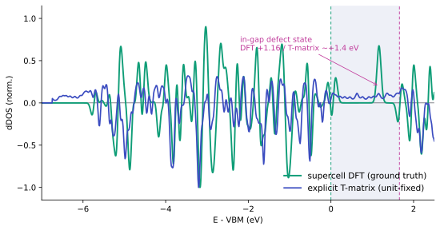
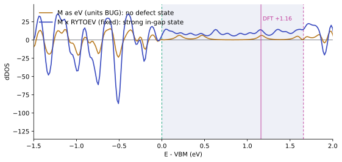

1. Spectral function (full-order, $\omega_0=$ VBM)
The defect-dressed spectral function $A(\omega)=-\tfrac1\pi\,\mathrm{Im\,Tr}\,[G^A+G^A T_{PP}\,G^A]$, with the active-space $T$-matrix $T_{PP}(\omega)=[1-\tilde V\,G^A(\omega)]^{-1}\tilde V$ and the full-order downfolded potential $\tilde V=V_{PP}+V_{PQ}\,\mathcal G^Q\,V_{QP}$, $\mathcal G^Q=[\omega_0-H_0^Q-V_{QQ}]^{-1}$ evaluated once at the VBM.

| Quantity | Value | Meaning |
|---|---|---|
| rest inverse cond$[\omega_0-H_0^Q-V_{QQ}]$ | $5.5\times10^{3}$ | finite — partition valid, no level pinned at $\omega_0$ |
| $\lVert\tilde V\rVert_F/\lVert V_{PP}\rVert_F$ | $1.41$ | moderate rest dressing (the earlier $\times11$ was the units-bug artifact) |
| $\int A_{\rm bare}\,d\omega$ | $1572$ | vs $1584$ active states — spectral sum rule satisfied |
| in-gap $\Delta$DOS peak | $\sim{+}1.4$ eV (E−VBM), strong | the S-vacancy defect state (cf. DFT $+1.16$ eV) |
2. Validation vs. direct supercell DFT
Ground truth: the defect-induced $\Delta$DOS = (107-atom S-vacancy KS DOS) − (108-atom pristine KS DOS), $\Gamma$-point, aligned by the deep-band reference. Compared on a common E−VBM axis (each curve normalized to unit peak, since the $k$-density and matrix-element normalization differ).

| Check | Verdict | Detail |
|---|---|---|
| Band structure (VBM, gap) | match | supercell (folded) VBM $-5.936$ eV, gap $1.657$ eV $=$ primitive $-5.937$/$1.66$; deep-band alignment shift only $-8$ meV |
| Deep-valence feature | aligns | strongest $\Delta$DOS peak: DFT $-3.16$ eV $\leftrightarrow$ T-matrix $-3.20$ eV (E−VBM) |
| In-gap defect state | recovered | DFT $+1.16$ eV; T-matrix $\sim{+}1.4$ eV — same strong in-gap feature (residual $\sim0.2$–$0.4$ eV) |
| Absolute magnitude | n/a | $k$-density (144 vs 36 folded) & normalization not reconciled — compare features/shape, not amplitude |
Verdict. With consistent units the explicit $T$-matrix reproduces the band structure, the delocalized valence-band scattering, and the localized in-gap defect state near the DFT energy. The residual $\sim0.2$–$0.4$ eV in the in-gap level is a second-order effect (static-$\omega_0$ limit, the semicore inclusion in $R$, and the 70-band basis truncation).
3. The units bug — how the in-gap state was lost and recovered
The first runs put the in-gap defect feature at the wrong energy ($+0.2$ eV, a weak band-edge tail) with an implausible $\lVert\tilde V\rVert/\lVert V_{PP}\rVert=11$. A step-by-step audit ruled out the usual suspects and pinned the cause:
| Hypothesis | Test | Outcome |
|---|---|---|
| Static-$\omega_0$ limit (deep/bound-level failure) | $\omega_0$ sweep across the gap | ruled out — feature insensitive to $\omega_0$ |
| FFT-grid folding mismatch | primitive vs supercell grids | ruled out — exactly $6\times6\times1$ commensurate (40×40×300 vs 240×240×300) |
| Potential alignment | pot_align vacuum vs none | ruled out — no meaningful change (shift $\sim0.012$ eV) |
| Bad matrix elements / basis | direct $H_0{+}V$ diagonalization | smoking gun — unphysical spectrum $\pm200$ eV ⇒ units |
| Units of $M$ | source-code audit | root cause — EDI writes $M$ in Ry (|M|^2(Ry^2)), used as eV |
EDI's ed_coarse.f90 writes the matrix elements in Rydberg, while the eigenvalues were converted to eV. Treating $M$ as eV under-counts every scattering term by $\mathrm{RYTOEV}=13.6057$. Because $\tilde V$ and $T_{PP}=[1-\tilde V G^A]^{-1}\tilde V$ depend on the units non-linearly, the effect is not a rescaling: $\tilde V G^A$ became $\ll 1$, collapsing the $T$-matrix to the first Born result $T_{PP}\!\approx\!\tilde V$, which cannot bind an in-gap state.

Fixing the units brought $\lVert\tilde V\rVert/\lVert V_{PP}\rVert$ from $11$ (artifact) to $1.4$, and moved the in-gap state from $+0.2$ eV (wrong) to $\sim+1.4$ eV (right). The earlier static-limit diagnosis was itself an artifact of the units bug.
4. Method & inputs
DFT. MoS₂ monolayer, pseudo-dojo v0.5 stringent NC pseudopotentials, $E_{\rm cut}^{\rm wfc}{=}100$ Ry, assume_isolated='2D'. SCF on a $12\times12$ grid; NSCF with 80 bands on the explicit full $12\times12$ ($144$ $k$, nosym). The S-vacancy $\Delta V$ comes from a relaxed $6\times6$ supercell (defect 107 atoms, pristine 108), extracted as cube files.
Matrix elements. EDI direct calculation mode (edmat_direct_from_file, band_ed='1-70') gives $\langle\psi_{nk}|\Delta V|\psi_{mk'}\rangle$ for all band pairs over the full $144\times144$ $k$-grid — $1.0\times10^8$ complex elements. The supercell $\Delta V$ is folded onto the primitive cell; the primitive and supercell FFT grids are exactly $6\times6\times1$ commensurate.
Downfolding & resummation. Active $A$ = bands 7–17 (11 valence/low-conduction), rest $R$ = bands 1–6 (semicore) + 18–70. The rest resolvent $\mathcal G^Q=[\omega_0-H_0^Q-V_{QQ}]^{-1}$ is a single $8496\times8496$ direct inverse (full-order in $V_{QQ}$). $\tilde V=V_{PP}+V_{PQ}\mathcal G^Q V_{QP}$ feeds $T_{PP}(\omega)=[1-\tilde V G^A(\omega)]^{-1}\tilde V$, $\omega_0={}$VBM, $\eta=0.05$ eV.
Caveats. (i) The spectral function is the raw $T$-matrix, not yet scaled by the defect concentration $n_d{=}1/36$. (ii) Static rest limit: $\mathcal G^Q$ frozen at $\omega_0$. (iii) Semicore bands (1–6) are in $R$ and couple strongly to the deep bare-ionic $\Delta V$; the Sternheimer-site analysis drops them. (iv) Unrelaxed-vs-relaxed defect geometry and the 70-band truncation set the $\sim0.2$–$0.4$ eV residual in the in-gap level.